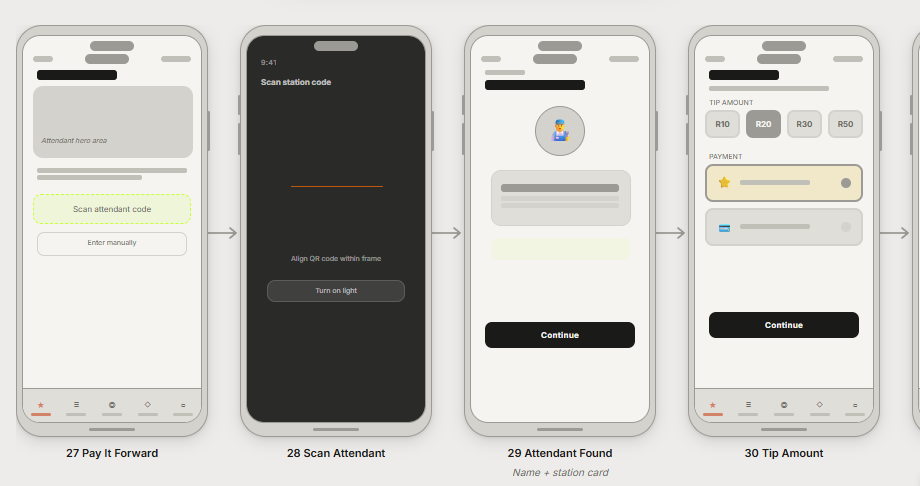

Customer friction
A card-based programme can make rewards difficult to access when customers do not carry the card or cannot easily see their balance.
Designing a petrol-retail rewards experience around the real rhythm of a fuel stop.
The concept explores a digital rewards experience for Shell customers in Johannesburg. The opportunity is to make earned value visible, give customers more choice in how they use it and connect rewards to the real service experience at a station.
A card-based programme can make rewards difficult to access when customers do not carry the card or cannot easily see their balance.
Bring rewards, flexible redemption and digital tipping into one clear journey that supports repeat engagement.
I reviewed loyalty experiences across fuel retail and adjacent high-frequency categories to understand how programmes communicate value, support payment choice and enable redemption.
Familiar earn mechanics and a broad station network.
Cashback and retail partnerships make value tangible.
Digital wallet and loyalty features within a partner ecosystem.
Deep banking integration and rewards across categories.
Behavioural engagement linked to driving and fuel spend.
Demonstrates a lightweight approach to cashless tipping.
Customers need to see what they have earned, understand how to use it and reach those choices without navigating unnecessary complexity. Integrating tipping with rewards could create a distinctive service moment, but the economics would need validation.

Needs rewards to be visible and useful in everyday spending. Values clarity, control and practical value.

Needs a quick, low-friction experience that fits naturally into a fuel stop. Values speed, choice and convenience.
These are hypothesis archetypes used to guide concept decisions, not interview-validated personas.
Do not force one payment method where customers expect flexibility.
Make it clear where and how earned value can be used.
Give customers a simple way to direct value towards attendants through tipping.
Make the rewards balance visible and easy to understand.
Make redemption options clear and reduce the effort required to find them.
Support a card-agnostic experience that fits different payment behaviours.
Allow customers to use the experience to recognise attendants, with programme economics and station operations validated before a pilot.
The information architecture brings balance visibility, redemption and service actions into a structure customers can understand quickly. This matters in a forecourt context, where attention and time are limited.

The high-fidelity direction makes rewards visible and brings payment freedom and intentional tipping into the same product ecosystem.


Do customers check their balance and return to use rewards?
Can customers understand and complete a redemption without friction?
Can tipping be delivered reliably for attendants and operational teams?
Next steps would include customer testing, station staff and operator input, technical feasibility, and modelling the economics of points-funded redemption and tipping before a pilot.
A loyalty proposition needs more than points. The value has to be visible, accessible and relevant in the moment customers need it. Product decisions also need to account for operational realities and commercial sustainability.
This is a self-directed concept informed by a competitor and market audit. The archetypes are hypotheses, not interview-based personas. The concept and proposed success measures require customer, commercial and station-operations validation.
Back to selected work ↑